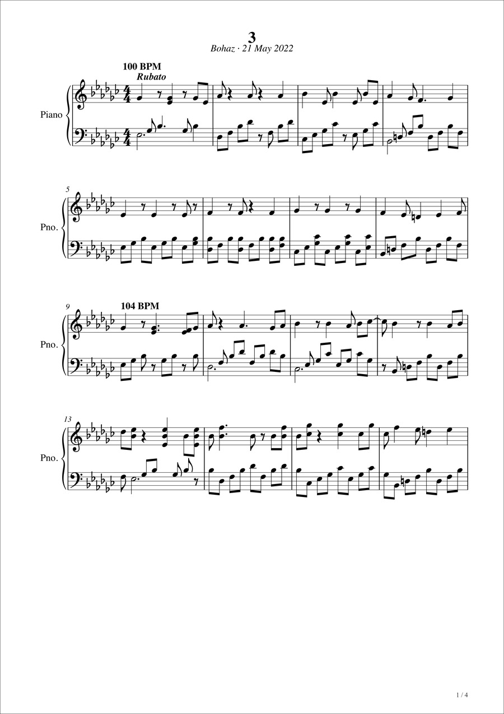

View full score
View full score SOLO PIANO
2
Bohaz · 23 Jan 2022
- Key
- E-flat minor
- Time
- 4/4
- Tempo
- 80 BPM · Rubato
- Length
- 65 measures · 4 pages
Listen to the recording
Original recording
Welcome to my corner of the internet. I am Bohaz, and I keep some of my maths and physics notes and the music I wrote here. I am also a researcher, broadly interested in quantum dynamics, machine learning, and their applications to physical phenomena such as thermal conductivity.
I hope there are people out there who will find these notes and sheet music useful and interesting. Ciao.
I try to write these notes in the most readable way possible, with the aim of teaching others. Please let me know if you find any errors or have simpler or clearer arguments for any part. Some of the wikipedia articles I edit are/will be based on these notes.
Loading your notes…
I wrote this music when I had a lot of free time. Now I am getting busier, but I will try to find time to write more. The recordings were made on a piano at school, and the piano was out of tune, but they should give a rough idea of how I intended the pieces to be played. They have not been named yet; I will think about what to name them.
 View full score
View full score Bohaz · 11 Nov 2021
Original recording
View full score Bohaz · 23 Jan 2022
Original recording

View full scoreBohaz · 21 May 2022
Original recording
I have finished writing this, but haven't got time to transcribe the record the rest of it yet.
EPFL
Supervisor: Prof. Michele Ceriotti
Christ Church, University of Oxford
First Class Honours
Part II (Year 4) Supervisor: Prof. David E. Manolopoulos FRS
Thesis: Quantum Nuclear Effects on the Phonons of Solid Hydrogen
Read thesisA* A* A* A* in Chemistry, Physics, Maths and Further Maths
Institute of Materials, School of Engineering, EPFL
Department of Chemistry, University of Oxford
University of Oxford